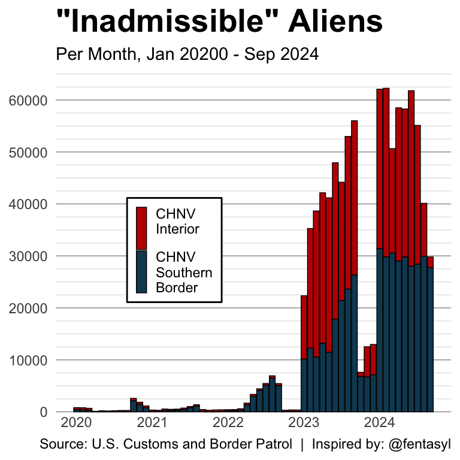

Recently, I saw this graph on X (formerly Twitter) and discovered that the data is available on the U.S. Customs and Border Patrol website. I thought that this data is timely considering the election in a few days, so I decided to analyze the data.
Encounter data includes U.S. Border Patrol Title 8 apprehensions, Office of Field Operations Title 8 inadmissibles, and all Title 42 expulsions for fiscal years 2020 to date. Data is available for the Northern Land Border, Southwest Land Border, and Nationwide (i.e., air, land, and sea modes of transportation) encounters.
Let’s try to reproduce the “Inadmissible Aliens” plot by @fentasyl. It is not called out in the Tweet, but “CHNV” refers to citizens of Cuba, Haiti, Nicaragua, and Venezuela. Also, “Interior” includes Northern Land Border encounters.
Code
cbp_resp |>filter( encounter_type =="Inadmissibles", chnv ) |>mutate(chnv_region =if_else( land_border_region =="Southwest Land Border","CHNV\nSouthern\nBorder","CHNV\nInterior\n" ) ) |>count( bom_month_date, chnv_region,wt = encounter_count,name ="total_encounters" ) |>ggplot(aes(x = bom_month_date,y = total_encounters,fill = chnv_region ) ) +geom_col(color ="black",lwd =0.25,# make the bars widerwidth =28 ) +scale_fill_manual(values =c("#C10000", "#0F4962") ) +scale_x_date(date_breaks ="1 year", date_labels ="%Y" ) +scale_y_continuous(minor_breaks =seq(0, 65000, 2500),breaks =seq(0, 65000, 10000) ) +labs(x =NULL,y =NULL,fill =NULL,title ='"Inadmissible" Aliens',subtitle ="Per Month, Jan 20200 - Sep 2024",caption ="Source: U.S. Customs and Border Patrol | Inspired by: @fentasyl" ) +theme(panel.grid.major.x =element_blank(),panel.grid.minor.x =element_blank(),axis.ticks =element_blank(),panel.border =element_blank(),plot.title =element_text(size =20,face ="bold" ),# add more horizontal grid linespanel.grid.major.y =element_line(color ="gray60", linewidth =0.25 ),panel.grid.minor.y =element_line(color ="gray90", linewidth =0.25 ),# move the legend inside the panel/plotlegend.position =c(0.3, 0.5),# add a border to the legendlegend.background =element_rect(color ="black",fill ="white" ),# make the legend key a small box instead of a tall rectanglelegend.key.width =unit(0.25, "cm"),legend.key.height =unit(0.25, "cm"),# move up the x axis textaxis.text.x =element_text(margin =margin(t =-10) ) )

Reproduction of @fentasyl‘s ’Inadmissible Aliens’ plot
The data in the plot above does not seem to match the original. Especially the end of 2023. Also, I couldn’t quite figure out how to make the legend key a small box instead of a tall rectangle.
Are “Admissible” border crossings down?
The media is claiming that border crossings are down, but they do not count “inadmissible” border crossings as “border crossings”. Let’s see if the “admissible” border crossings are down.
It seems that “admissible” border crossings are down since the beginning of 2024. Let’s take a look at a combined plot that includes citizens of all countries.
It looks like border crossings are down since 2024 whether you count “admissible” or “inadmissible” border crossings. Let’s see if the story is different for citizens of Cuba, Haiti, Nicaragua, and Venezuela.
It seems that border crossings are down since 2024 whether you count “admissible” or “inadmissible” border crossings. The story is the same for citizens of Cuba, Haiti, Nicaragua, and Venezuela.
The data does not seem to match the original plot by @fentasyl. I am not sure if the data is different or if I made a mistake in my analysis.